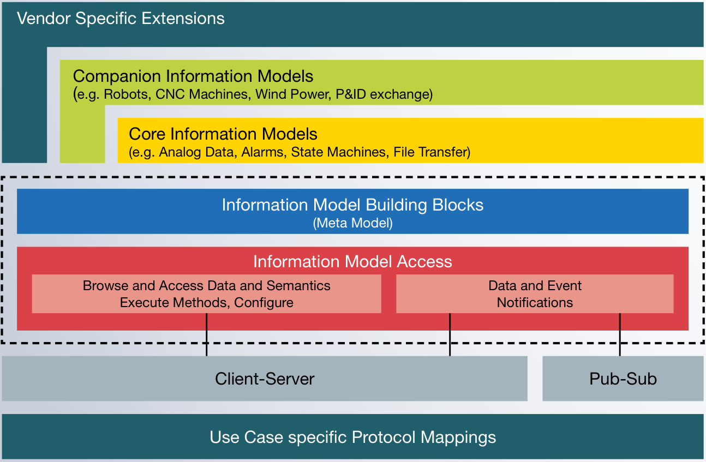
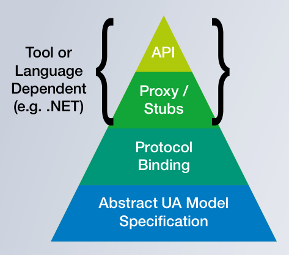

สถาปัตยกรรมพื้นฐาน
OPC UA ไม่ใช่แค่ Protocol — แต่เป็น สถาปัตยกรรมแบบเป็นชั้น (Layered Architecture) ที่แยกชัดเจนว่าอะไรเป็น ข้อมูล, อะไรเป็น การเข้าถึงข้อมูล, และอะไรเป็น การส่งข้อมูล — บทนี้พาดูภาพรวมของแต่ละชั้น
ภาพรวม Layer Model
ลองมองดูสถาปัตยกรรมของ OPC UA แบบเป็นเค้กหลายชั้น — ชั้นล่างสุดดูเทคนิคที่สุด ชั้นบนสุดดูเป็นข้อมูลที่อุตสาหกรรมเข้าใจง่ายที่สุด:

ไล่ดูทีละชั้น (จากบนลงล่าง)
- Vendor Specific Extensions — ส่วนที่ผู้ผลิตเครื่องแต่ละราย เพิ่มของตัวเอง เข้ามาเพื่อให้ลูกค้าเข้าถึงฟีเจอร์เฉพาะของยี่ห้อ
- Companion Information Models — มาตรฐานเฉพาะอุตสาหกรรม เช่น Robotics, CNC Machines, Wind Power, P&ID Exchange (รายละเอียดในบทที่ 07)
- Core Information Models — มาตรฐาน "ของ OPC Foundation" เอง สำหรับสิ่งที่ทุกอุตสาหกรรมต้องใช้: Analog Data, Alarms, State Machines, File Transfer
- Information Model Building Blocks (Meta Model) — กฎพื้นฐานของการสร้าง Object: Variable, Type, Method, Event, Reference — เป็น "ระบบไวยากรณ์" ที่ทุกระดับใช้ร่วมกัน
- Information Model Access — บริการ (Services) ที่ Client ใช้เข้าถึงข้อมูล: Browse, Read, Write, Subscribe, Call Method (รายละเอียดในบทที่ 04)
- Client-Server & Pub-Sub — สองรูปแบบของการสื่อสาร — เลือกใช้ตามสถานการณ์ (พูดต่อในบทนี้)
- Use Case specific Protocol Mappings — ชั้นล่างสุด — เลือกใช้ Network Protocol ที่เหมาะกับงาน: TCP/IP, HTTPS, MQTT, AMQP, UDP, TSN, …
2 Patterns การสื่อสาร — เลือกใช้ตามสถานการณ์
Pattern 1 — Client-Server (ดั้งเดิม)
เหมือนกับ Web Browser คุยกับ Web Server — Client ขอ, Server ตอบ:
Client
เช่น HMI, MES, SCADA
- เปิด Session
- Browse Address Space
- Read/Write ค่า
- Subscribe ค่าที่เปลี่ยน
- Call Method
Server
เช่น PLC, Sensor, Gateway
- Listen TCP Port 4840
- Authenticate Client
- Serve ข้อมูลตาม Request
- Push Notification ตาม Subscription
จุดเด่น:
- Browse ได้ — Client เปิดเข้ามาแล้วค้นหาเองได้ว่ามีอะไรอยู่บ้าง (ไม่ต้องเปิด Manual)
- Bi-directional — ส่งคำสั่งกลับไปสั่ง Server ได้ (เช่น Start/Stop Process)
- มี Session — รักษาสถานะ User Login ได้
เมื่อไหร่ใช้: HMI/SCADA ที่ต้องการ Control + Monitor, Engineering Tools, MES ที่ต้อง Read & Write
Pattern 2 — Publish-Subscribe (PubSub, แบบใหม่)
เหมือนกับการสมัครรับ Newsletter — ใครที่สนใจหัวข้อนี้ก็สมัครรับ:
Publisher
PLC, Sensor
- ส่งข้อมูลออก
- ไม่รู้จัก Subscriber
- "ส่งแล้วลืม"
Broker / MOM
เช่น MQTT Broker
- รับจาก Publisher
- แจกให้ Subscriber
Subscriber #1
Cloud Dashboard
Subscriber #2
MES
Subscriber #3
ML Model
จุดเด่น:
- Scale ได้ดี — Publisher ไม่ต้องสนใจว่ามี Subscriber กี่คน
- Decoupled — Publisher และ Subscriber ไม่ต้องรู้จักกัน
- เหมาะกับ Cloud — ใช้ MQTT/AMQP ที่เป็นมาตรฐาน Cloud อยู่แล้ว
เมื่อไหร่ใช้: ส่งข้อมูลเซ็นเซอร์ไป Cloud, IoT Telemetry, Many-to-Many, Field Level Real-time (UDP)
Protocol Mappings — Network ใช้อะไรก็ได้
OPC UA ออกแบบให้แยก เนื้อหา ออกจาก วิธีส่ง — ส่งผ่าน Network แบบไหนก็ได้ ขึ้นอยู่กับ use-case:
| Mapping | Pattern | เหมาะกับ |
|---|---|---|
| UA TCP + UA Binary (Port 4840) | Client-Server | Real-time ในโรงงาน · Performance สูงสุด |
| HTTPS + JSON/WebSockets | Client-Server | Web Browser Client · Firewall-friendly |
| MQTT | PubSub | Edge → Cloud · IoT · ผ่าน Broker |
| AMQP | PubSub | Enterprise Messaging |
| UDP | PubSub | Multicast ใน Field · ความเร็วสูงสุด |
| TSN / 5G | PubSub (Deterministic) | Motion Control · Safety (รายละเอียดบทที่ 08) |
| REST (HTTP) | Client-Server | IT Integration · Cloud APIs |
Platform / Vendor / Language Independence
ปรัชญาสำคัญของ OPC UA: ไม่ผูกกับใครเลย ลองดูภาพ Pyramid นี้:

ในทางปฏิบัติแปลว่า:
- OPC UA Server เขียนด้วย C ฝัง MCU ขนาดเล็ก (เริ่มที่ ~15 kB Flash ตามรายงาน Fraunhofer) ก็มี Cloud Application เขียนด้วย Python อ่านข้อมูลได้
-
SDK พร้อมใช้ มีทั้ง
open62541(C),UA-.NETStandard(C#),python-opcua/asyncua(Python),node-opcua(JavaScript),Eclipse Milo(Java) - ไม่มีค่า License — Spec ฟรี (PDF เปิดให้โหลด), .NET Stack เป็น Open Source บน GitHub, Information Models 430+ ตัวฟรี
Accessibility & Reliability
OPC UA ออกแบบมาให้รัน 24/7 ในโรงงาน — มีของให้ในตัว:
สรุปบทที่ 02
- OPC UA เป็น Layered Architecture — แยกระดับ ข้อมูล, การเข้าถึง, และ การส่ง ออกจากกันชัดเจน
- มี 2 Patterns — Client-Server (สำหรับ Control + Browse) และ PubSub (สำหรับ Telemetry + Cloud)
- รองรับ Network Protocol หลายแบบ — TCP, MQTT, HTTPS, UDP, TSN — ใช้ได้ตามสถานการณ์
- ไม่ผูกกับ Platform, Vendor, หรือภาษา — เขียนด้วยอะไรก็ได้ รันบนอะไรก็ได้
- มี Reliability ในตัว — Reconnection, Buffering, Redundancy
บทต่อไปจะลงลึกที่ Information Model — ส่วนที่แตกต่างที่สุดจาก Modbus — เพราะข้อมูลใน OPC UA ไม่ใช่แค่ "Register 40001 = 2350" แต่เป็น Object ที่มีชื่อ, ประเภท, หน่วย, ลำดับชั้น